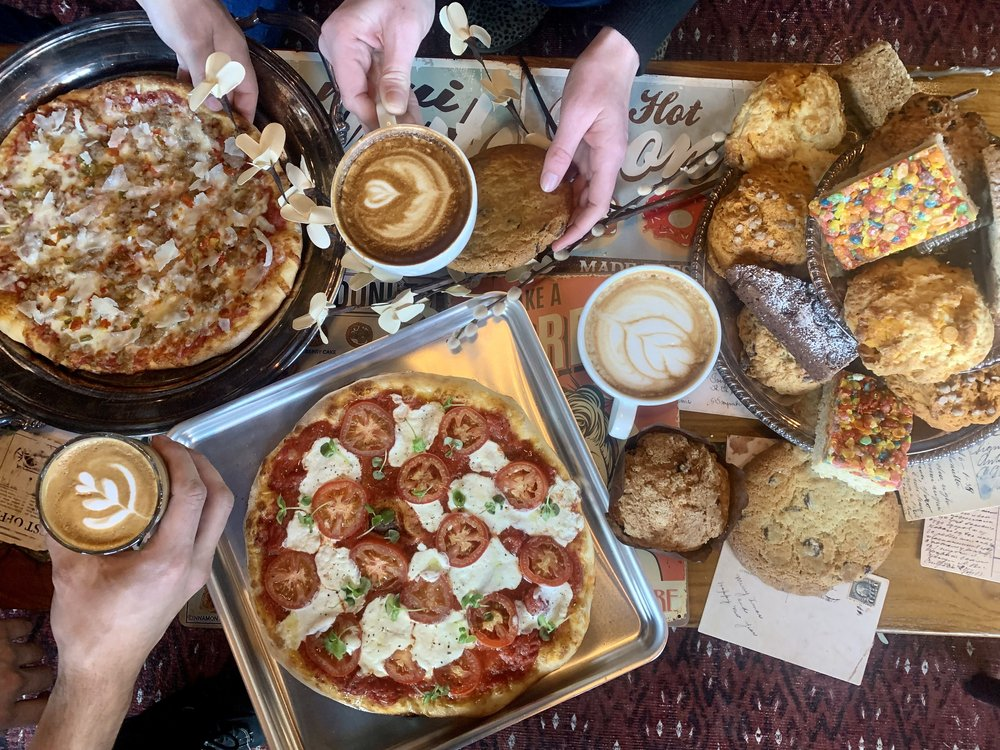
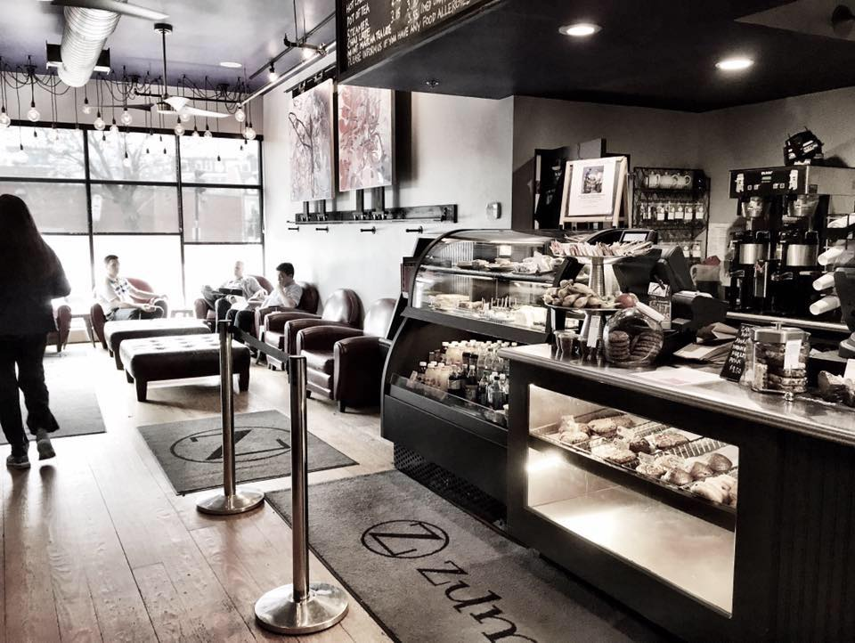

Tradesman Charlestown- Yes! Tradesman has another location! This one is different however, because it gives off more of a restaurant feel. It has a coffee shop in the front and opens up into a full blown restaurant with one of the biggest bar I have ever seen. They are well known for their amazing pizza flavors and brunch! They make fresh homemade tiny donuts every weekend which are perfect for brunch! Also, make sure to order their espresso martini! It is like no other. This place is perfect to sit and do work and have a drink!

Zumes- Recently, I was on the hunt for dried rose petals and I ended up walking by Zumes and I thought it was the cutest cafe! It is small but not terribly crowded. Their coffee is perfect and their pastries are fun. There is not a lot of places to sit because of the size however.